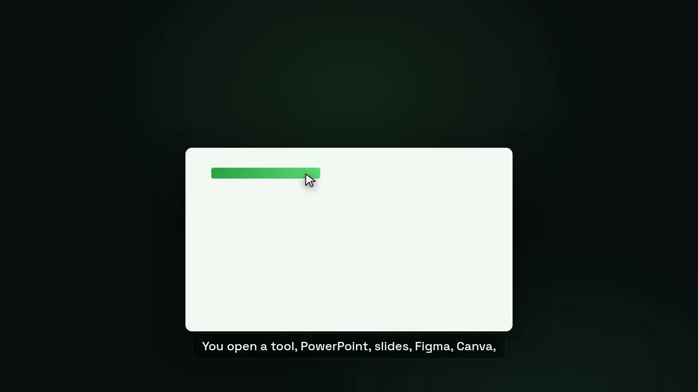
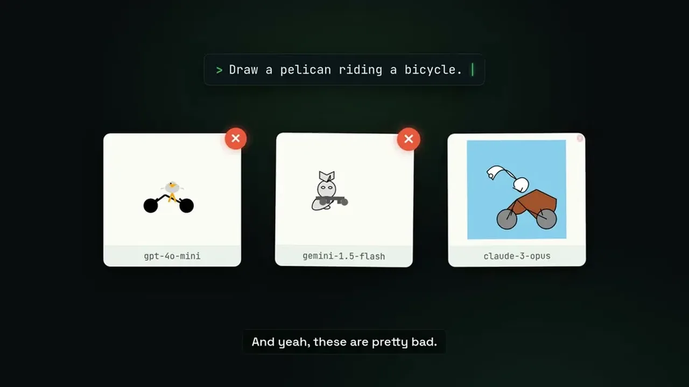
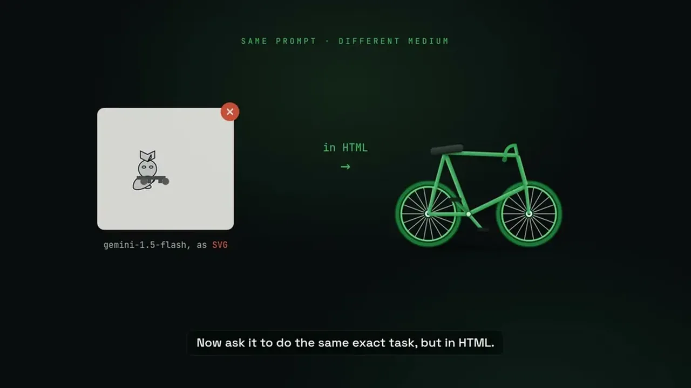

Tools built for human hands and eyes (click, drag, drop, snap to grid) store a data structure only the application can read. When handed to an agent, the output comes out wrong: overlapping elements, unreadable text, no alignment.
“What happens when you hand these tools to an agent? Well, the output comes out all wrong. Things overlap in weird ways, you can't see the text, there's no alignment”
▶ watch at 01:37
Developer Simon Willison's test asks every new model to draw a pelican riding a bicycle using only SVG, as a quick check of whether a model can reason about space; the examples shown from this test are described as very bad.
“There's a famous little test for this from developer Simon Willison. He asks every new model the same thing. Can you draw a pelican riding a bicycle?”
▶ watch at 02:08
The talk argues a human handwriting raw SVG would produce equally bad results, since SVG is a wall of numbers that isn't how people (or, by extension, models) think about graphics. The fix is to give the model tools based on how it thinks -- words, tokens, structure -- rather than pixel coordinates.
“If you ask me, it's not the model, it's the medium. If I asked you, someone who is presumably human, to handwrite an SVG of a pelican, you wouldn't be able to do that either.”
▶ watch at 02:38“You need to give the AI tools based on how it thinks, not in pixels, in language. Words, tokens, structure, that is its native medium.”
▶ watch at 03:10HTML lets a model think in structure because its tags carry built-in meaning (heading, chart, grid) that the browser renders to pixels, so the model never has to place a coordinate directly. The talk separates the editing format from the presentation format, noting a slide deck is just PowerPoint's presentation mode, and recommends picking whatever editing format agents are already good at.
“HTML lets the model think in structure. HTML tags have meanings built into the language. A heading, a chart, a grid, and the browser turns it all into pixels.”
▶ watch at 03:42“PowerPoint is a tool that you use to make slide decks. The deck itself, that's just the presentation mode.”
▶ watch at 04:44
| Stance | Claim | t |
|---|---|---|
| asserts | A slide deck that takes 10 hours to build should really take about 25 minutes once formatting, branding, and manual layout are removed. | 01:04 |
| warns | Handing agents human canvas tools produces broken output: overlapping elements, unreadable text, no alignment. | 01:37 |
| asserts | Developer Simon Willison tests every new model by asking it to draw a pelican riding a bicycle in SVG, as a gut check for spatial reasoning. | 02:08 |
| asserts | A human handwriting an SVG of a pelican wouldn't be able to do it either, because SVG is a wall of numbers, not a medium humans or models think in. | 02:38 |
| recommends | Give AI tools based on how it thinks -- in language, words, tokens, and structure -- rather than pixel-based canvas tools. | 03:10 |
| asserts | HTML lets a model think in structure because its tags (heading, chart, grid) carry built-in meaning that the browser renders to pixels. | 03:42 |
| recommends | A slide deck is distinct from PowerPoint; the deck itself is just the presentation mode, so the editing format can be chosen freely. | 04:44 |
Machine-readable copy embedded in this page (script#ontology) and in the corpus ontology.